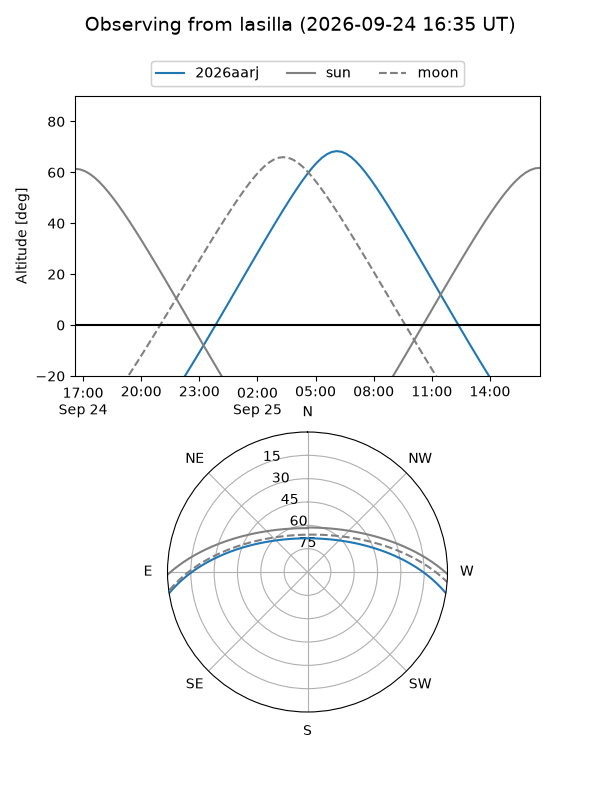
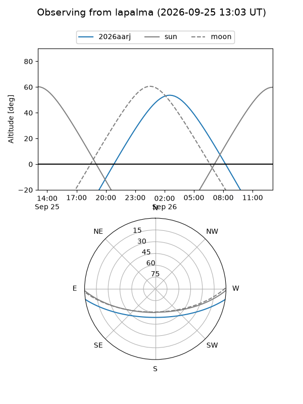
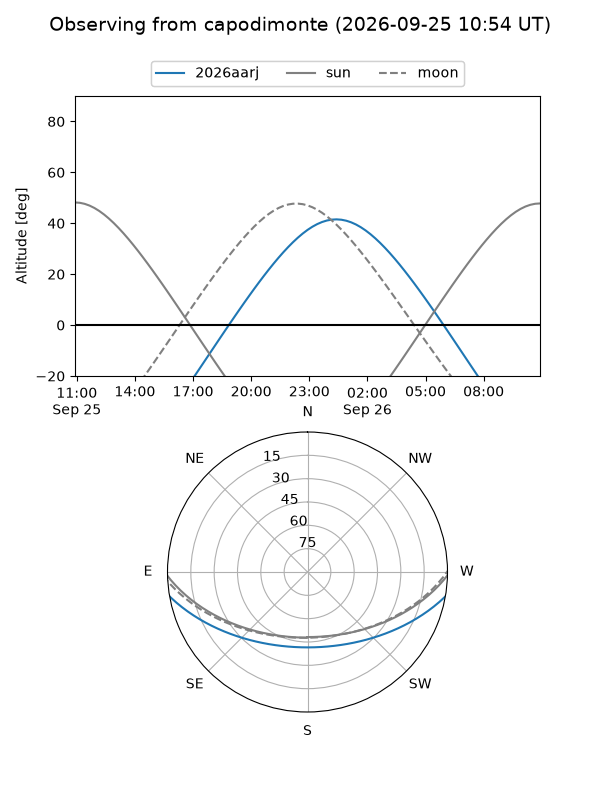
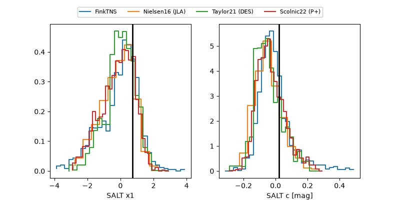

2026aarj
Target 2026aarj at 2026-09-25 17:38
Aliases and brokers:
FINK-ZTF: ztf.fink-portal.org/ZTF26abshbdu
Lasair-ZTF: lasair-ztf.lsst.ac.uk/objects/ZTF26abshbdu
ALeRCE-ZTF: alerce.online/object/ZTF26abshbdu
YSE-PZ: ziggy.ucolick.org/yse/transient_detail/2026aarj
TNS name: wis-tns.org/object/2026aarj
Direct TNS query: direct search
alt names
ZTF26abshbdu (ztf,fink_ztf)
2026aarj (tns,yse)
Coordinates:
equatorial (ra, dec) = 24.5799,-7.73908
equatorial (HMS+DMS) = 01:38:19.18,-07:44:20.67
galactic (l, b) = (154.8970,-67.65307)
Flags:
TNS type: nan
peak dt: +14.1
Photometry:
last atlasc=19.55, ztfg=20.11, ztfr=19.78
1 atlasc, 9 ztfg, 9 ztfr detections
Lightcurve
Visibility



Additional plots
